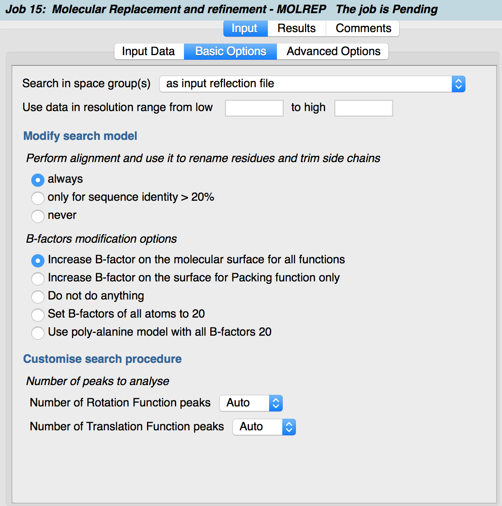

Job inputs usually have many input tabs. These are usually arranged so that the expertise level of the oprions increases in each tab to the right. e.g. mandatory input data; basic options; advanced options.
